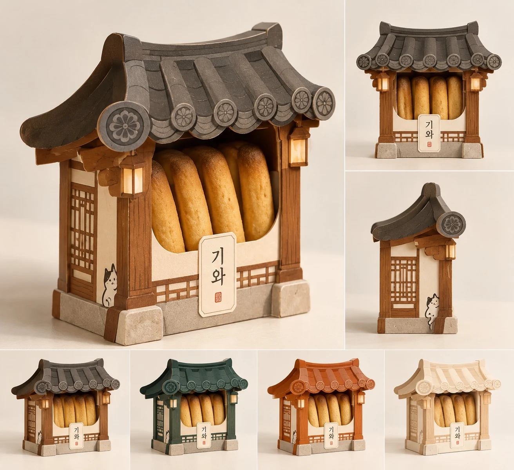
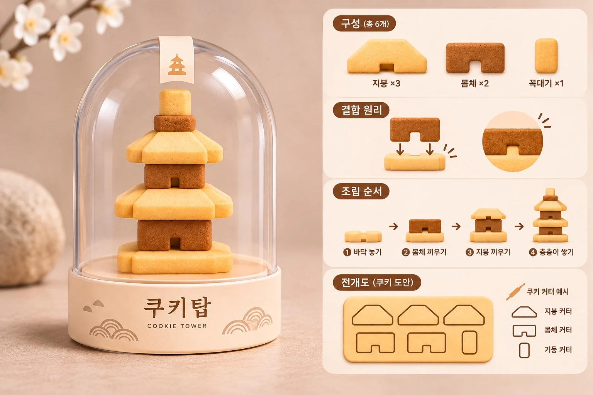

AN EDIBLE ARCHIVE OF JEONJU
전주의 뿌리에서 피어난
새로운 주전부리, 전주BURI
전주의 뿌리깊은 음식문화와 지역의 이야기를 담아
새로운 디저트로 만듭니다.
ROOTS TO TREATSJEONJU BURI / VOL. 001
THE BURI EDIT / 01
선택한 컬렉션
전주의 모양을 담은 제품 기획 시안입니다. 실제 제품 구성과 출시 여부는 제작 과정에서 달라질 수 있습니다.
FIND YOUR LITTLE PLEASURE / 02
취향을 따라, 세 가지 이야기.


OLD STORIES, NEW LITTLE PLEASURES / 03
전통에 상상력을 더해,
특별한 한입으로.
전주BURI는 전주의 뿌리깊은 음식문화와 지역의 이야기를 담아 새로운 디저트로 만듭니다.
전통의 맛과 재료에 새로운 상상력을 더해, 전주의 매력을 특별한 한입으로 전합니다.
전주BURI 이야기


02 / ABOUT BURI
A DIFFERENT TASTEOF JEONJU
전주의 뿌리에서 피어난
새로운 주전부리, 전주BURI
전주BURI는 전주의 뿌리깊은 음식문화와 지역의 이야기를 담아 새로운 디저트로 만듭니다.
ROOTS
TO TREATS
TO TREATS
From tradition
to a new point
of view.
OUR POINT OF VIEW / 001
전통의 맛과 재료에
새로운 상상력을 더합니다.
전통의 맛과 재료에 새로운 상상력을 더해, 전주의 매력을 특별한 한입으로 전합니다.
03 / OBJECT INDEX
COLLECTIONVOL. 001
전주의 모양을 담은
아홉 가지 이야기.
전주BURI의 첫 번째 제품 아카이브. 이미지를 선택하면 상품 기획을 자세히 볼 수 있습니다.
09 OBJECTS
EDITOR'S NOTE —
현재 소개된 이미지는 제품 기획 시안입니다. 실제 제품 구성과 출시 여부는 제작 과정에서 달라질 수 있습니다.
04 / JOURNAL
NOTES FROMTHE STUDIO
전주BURI의 소식과 기록.
새로운 제품, 제작 과정, 작은 이야기를 이곳에 기록합니다.
NO. / SUBJECTDATE